A simple, step-by-step manual for running your gym on GymOS — your numbers, your plans, your staff, and the front desk your team works on.
For gym owners & managers
See your money and your numbers
Manage members and renewals
Add staff and control access
Set your plans and prices
Your gym. Simplified.
gymos.africa
What's in this guide
Part One is your side of GymOS. Part Two is the front desk, so you can set it up and teach it.
What GymOS doesThe two things every member pays for, and who does what
Your first time signing inYour username and picking your password
Signing in each dayAnd what to do if it won't let you in
Getting the softwareDownloading the desk app from the web, and GymOS on your phone
Getting to know your screenYour seven menu items
The DashboardFive numbers and two graphs
MembersYour whole list, and how to filter it
AttendanceWho came in, and who checked them in
FinancesWhat came in, and who took it
Expiring soonThe people to ring this week
Your teamAdding staff, resetting passwords, suspending an account
SettingsYour plans, prices and extra questions
DownloadsThe app and the guides
Your subscriptionFree trials, and what happens if it runs out
When the internet is downHow the desk keeps working
Part Two — The front deskEverything your receptionists see and do
Setting up from scratchThe order to do things on day one
If something looks wrongEvery message, explained
Your routineDaily, weekly and monthly checks
Chapter 1
What GymOS does
GymOS runs the day-to-day of your gym: who is a member, what they paid, whether they may come in, and who actually turned up. You decide how it's set up. Your desk staff run it.
Every member pays for two things
This is the idea everything else is built on.
Item
What it is
Membership
The right to belong to the gym. Everybody must have one — nobody can be signed up without it. Membership always lasts a year.
Equipment
The right to use the machines. Optional, priced separately, and you choose how long it lasts — a day, a week, a month or a year.
The two are counted separately, and your desk sees both at once with a plain answer: let them in, or don't. That's what lets you sell a yearly membership at one price and daily equipment access at another, which is how most gyms actually take money.
Who does what
Who
Can do
You
Set the plans and prices, add extra sign-up questions, create staff accounts and pause them, and see every member, every payment and every visit — including who recorded it.
Your receptionists
Sign members up, check them in, take payments, fix member details. They only see the money they personally took.
Your provider
Sets up your gym and your owner account, chooses your gym's name, member code and currency, and looks after your subscription.
What you can't do, on purpose
Take a payment or check somebody in. Those are desk jobs. On your side you can see everything and change nothing.
Change or delete a payment or a visit. Nobody can — not your staff, not you, not your provider.
Change your gym's name, member code or currency. Your provider sets those. The member code in particular is permanent, because it's printed into every member number you've ever issued.
Why you can't edit the history
If yesterday's takings could be changed, they would prove nothing. Because nobody can alter a recorded payment, your Finances page is real evidence of what came in. The same goes for attendance.
Chapter 2
Your first time signing in
There's no sign-up form anywhere in GymOS. Your provider creates your account and hands you the details.
The sign-in screen. The same one your staff use — what you can see afterwards depends on your account, not on this screen.
What you're given
Item
Detail
A username
Your gym's short code, a dash, then a name — like sbg-owner. All small letters. It is not an email address.
A starter password
Made up by the system and shown to your provider once. Write it down.
Your gym's code
Three or four letters, like SBG. Every member number starts with it (SBG-0001), and so does every staff username.
Step by step
Go to gymos.africa in a browser and open the sign-in page.
Type your username and the starter password, then press Sign in.
A screen asks you to pick your own password. This only happens once and can't be skipped.
Type a new password, then the same one again. At least 6 characters.
Press Set password. You land on your Dashboard.
There is no password reset
GymOS never sends email — no reset links, no codes. If you lose your password, your provider has to make you a new account. Keep it somewhere safe.
Do this first, on a computer
Sign in on the web before anything else. From there you can download the desk app (Chapter 4), and you'll want your plans set up (Chapter 12) before your staff try to sign anybody up.
Chapter 3
Signing in each day
Username, password, straight to your Dashboard.
Where the sign-in page is
How you opened it
What you see first
A web browser
Go to gymos.africa and use the Sign in link.
The installed desk app
The sign-in screen straight away.
The icon on your phone
The sign-in screen straight away.
If it won't let you in
Message
What to do
Incorrect username or password.
Check Caps Lock, your gym's code and the dash.
Too many attempts. Wait a moment and try again.
Too many wrong tries. Wait a few minutes.
Can't reach the server…
No internet. In a browser you have to wait for it.
This account has been suspended…
Your account has been paused. Contact your provider.
No account is set up for [username].
The password worked but there's no account attached. Contact your provider.
It signs you out on its own
Everybody, everywhere: after 30 minutes with nobody touching it, GymOS signs you out. An office screen left open all afternoon will not still be signed in.
Chapter 4
Getting the software
The desk app for your front desk, and GymOS on your phone for you. You can get both yourself — sign in on the web and take what you need.
Which one goes where
Version
Who uses it
Why
The desk app
Your front desk
It keeps working when the internet is down. Your desk can't stop working because the connection did.
A web browser
You
Nothing to install, always up to date, works on any computer.
Your phone
You
Check today's numbers from anywhere.
Downloading the desk app while signed in on the web
This is what the Downloads page is for. You don't need your provider there to set up a new computer — sign in on the web, take the app, and go.
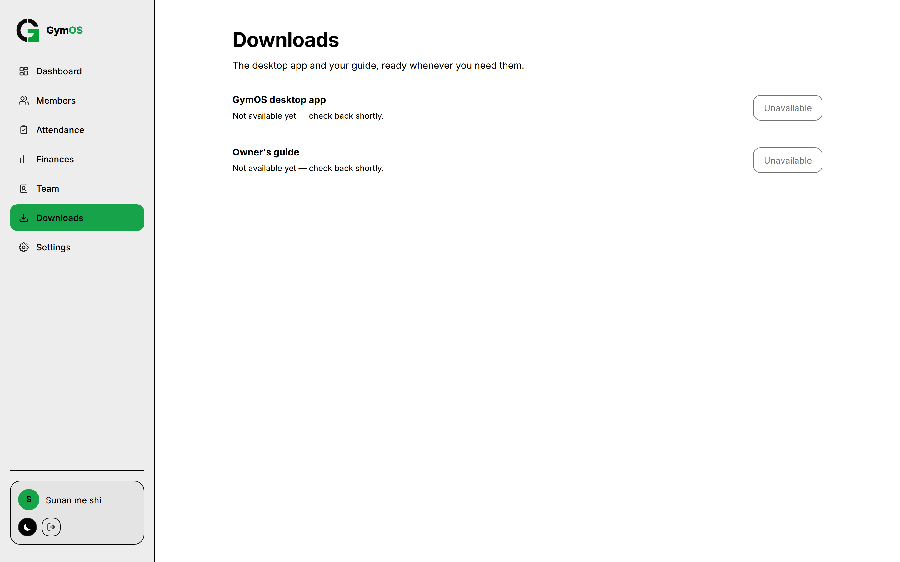
Downloads. The desk app is the first item, your guide beneath it. Each one gets a green Download button, with its version, file size and date, once your provider has published it — until then it reads Not available yet, as it does here.
On the computer you want to set up, open a web browser and go to gymos.africa.
Sign in with your owner username and password.
In the menu on the left, click Downloads — the arrow pointing down.
Find GymOS desktop app at the top of the list.
Press the green Download button beside it. It is a big file — around 120 MB — so give it a minute and don't close the tab while it's going.
When it finishes, open the downloaded file and run it.
Click through the installer. It puts a GymOS icon on the desktop and one in the Start menu.
Open GymOS from that new icon. The sign-in screen comes up straight away.
Sign in with the same username and password you use on the web.
The first sign-in on a new computer takes longer than usual while it copies your members and history onto the machine. Let it finish.
Can't find the download?
The desk app only appears when you're in a web browser. Inside the installed app itself it's hidden — there's no point downloading the installer from the thing it already installed. Your guide is still listed there.
Setting up each desk computer
Install the app yourself using the steps above — the installer is offered on owner accounts only, so your receptionists can't do this themselves.
Get each receptionist to sign in on that computer at least once while the internet is working.
That first proper sign-in is what lets them sign in later without internet. It's per person and per computer — your sign-in doesn't cover theirs.
After that it works for 14 days from each person's last proper sign-in there, and the clock restarts every time they sign in with internet.
Do this before you need it
Don't find out on the morning of an outage that your new receptionist has never signed in properly on the desk computer. Make that first sign-in part of hiring somebody.
Putting GymOS on your phone
There is no app store to search. You add it straight from the browser.
Phone
How
Android
Open gymos.africa, tap the ⋮ menu, then Install app or Add to Home screen, and confirm.
iPhone
Open gymos.africa in Safari, tap Share, scroll to Add to Home Screen, then Add.
A GymOS icon appears on your home screen and opens full-screen, with no browser bar. It goes straight to the sign-in screen.
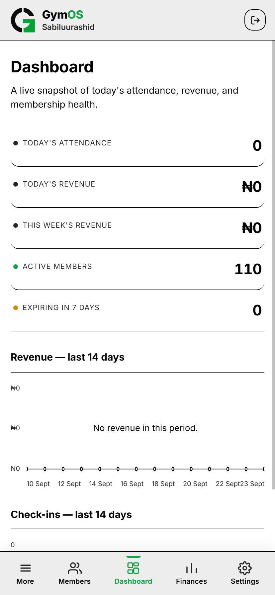
On your phone GymOS opens straight to the sign-in screen with no browser bar. Chapter 5 shows what the phone layout looks like.Chapter 5
Getting to know your screen
Seven things down the left. No hidden menus.
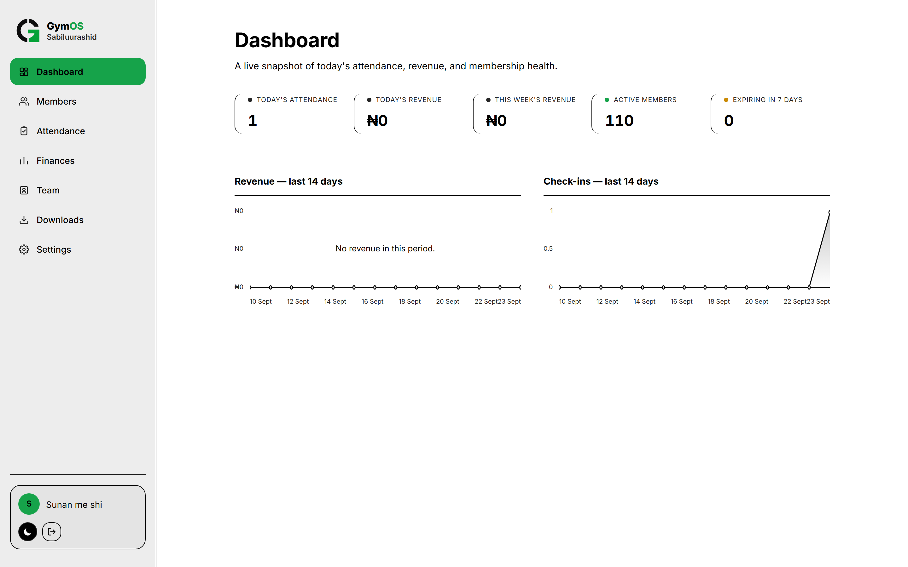
Your Dashboard. The menu is down the left, your gym's name sits under the GymOS logo, and your own name is at the bottom with the light/dark button and sign-out.
Menu item
The question it answers
Dashboard
How is the gym doing right now? This is where you land.
Members
Who's on the books, and are they paid up?
Attendance
Who came in, when, and who checked them in?
Finances
What money came in, over what period, and who took it?
Team
Who works the desk, and what have they been doing?
Downloads
The app and the guides.
Settings
Plans, prices, extra questions, colours, password.
One page isn't in the menu: Expiring soon. You get there by clicking the Expiring in 7 days box on the Dashboard. It's a report you're sent to, not a place you go.
On a phone
A phone can't show seven or eight menu items without shrinking every label to a sliver, so the bar holds five: More on the far left, then Members, Dashboard and Finances, with Settings pinned on the far right. Dashboard sits in the middle because it's the page GymOS opens on and the one you'll come back to most — right under your thumb.
Your Dashboard on a phone. Five buttons along the bottom, with Dashboard in the middle.
Everything else — Attendance, Team, Downloads and All branches — is one tap away behind More.
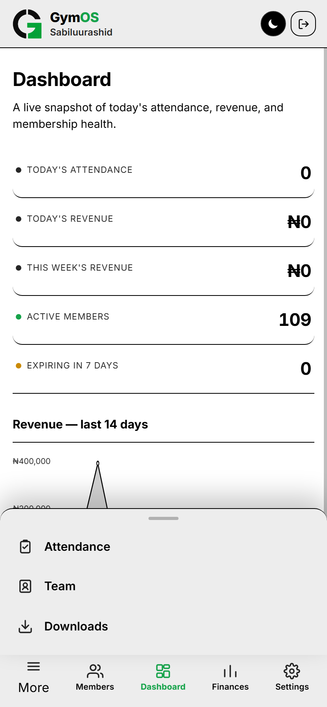
Tap More and the rest slides up. Tap any of them to go there, or tap outside to close it. When you're on one of these pages, More lights up green so you can still see where you are.
If you have more than one branch
A drop-down appears near the top of the menu listing your branches, and an extra menu item called All branches. Picking a branch changes everything — Dashboard, Members, Attendance, Finances, Team and Settings all then describe that branch. Glance at the gym name under the logo before you read a number.
Chapter 6
The Dashboard
Five numbers and two graphs, meant to be read in about ten seconds. Every number is a link to the page behind it.
The five numbers
Box
What it counts
Click it for
Today's attendance
People checked in since midnight.
Attendance
Today's revenue
All money taken since midnight.
Finances
This week's revenue
From Monday morning to now.
Finances
Active members
How many people are on your books.
Members
Expiring in 7 days
Memberships running out within a week. It changes colour when it's above zero.
Expiring soon
Read "Active members" carefully
It counts people on the list, not people who are currently paid up. To see who is really paid up, open Members and use the Active Membership filter. The gap between those two numbers is how many have lapsed — and it's worth watching.
The two graphs
Underneath, two graphs covering the last 14 days: what you took each day, and how many people came in each day. Fourteen days is two full weeks, so a Saturday sits next to a Saturday and you're comparing like with like.
What to look for
What you see
What it usually means
People still coming, money falling
They're training on plans already paid for. Check Expiring soon — a dip in money often shows up there a week early.
Money steady, people not coming
They're paying but not turning up. Those are next year's renewals at risk.
A completely empty day in the middle
Check whether the desk was offline and hasn't sent its work up yet. See Chapter 15.
"Expiring in 7 days" climbing
A wave of renewals is coming. Click it and work the list before the week is out.
Chapter 7
Members
Everybody on your books, with a filter for who's paid up and a search that looks at everything your desk collects.
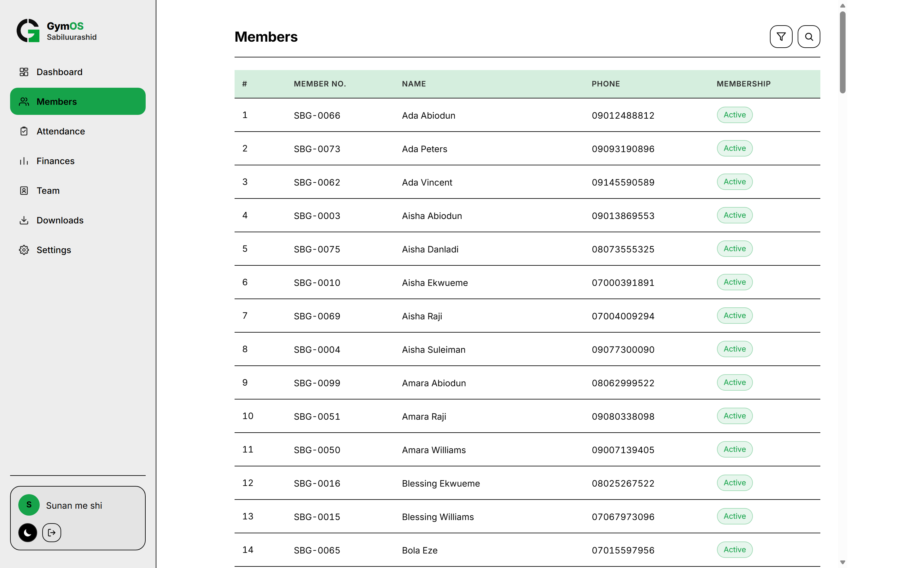
Your member list. Everyone in name order, with a green or red label showing whether their membership is good. The two buttons top right are the filter and the search.
The filter
Filter
Shows
All
Everybody. This is the normal view.
Active Membership
Only people who are currently paid up. This is your real paying base.
Expired Membership
Everyone who has lapsed — your win-back list.
Expiring Soon
Still paid up, but running out within 30 days. Note this is a wider net than the Dashboard's 7-day box.
The search
The magnifying glass opens a search box, and it looks at more than the columns you can see. It searches name, member number, phone, email, address, emergency contact — and the answers to any extra questions you added to the sign-up form.
Use it as a quick report
If you added a question like "How did you hear about us?", searching for instagram pulls up everybody who answered that. Combine it with the Active Membership filter and you have a rough idea of which channel brings paying members, with no reporting tool involved.
One member's page
Click any row to open it. You see everything and change nothing — there are no payment buttons on your side.
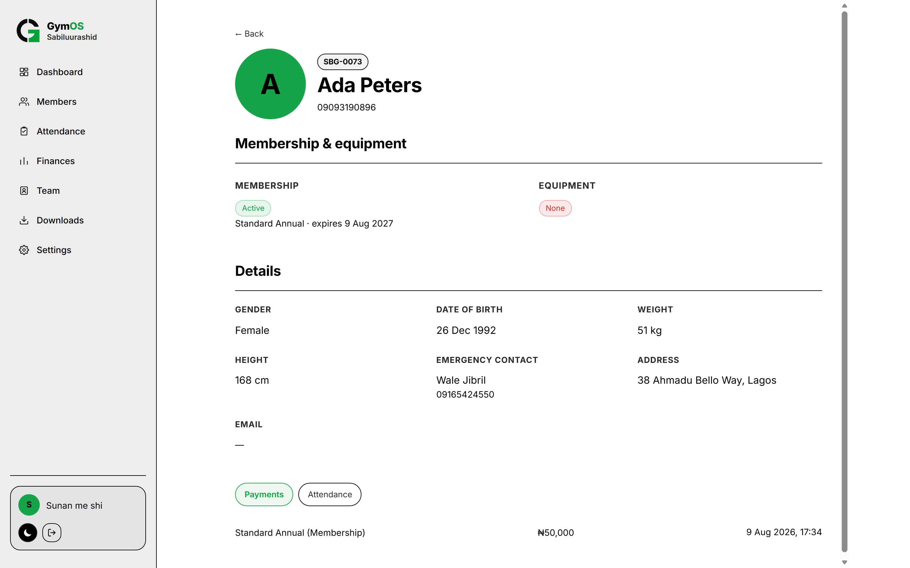
A member's page, your view. Their membership and equipment standing, their details, and at the bottom two tabs for everything they've paid and every visit they've made. No buttons — those belong to the desk.
Those two tabs settle most member arguments on the spot: what they paid and when, and whether they were actually here.
Chapter 8
Attendance
Every check-in your gym has ever recorded, by date, searchable by member — and if you open a row, who checked them in.
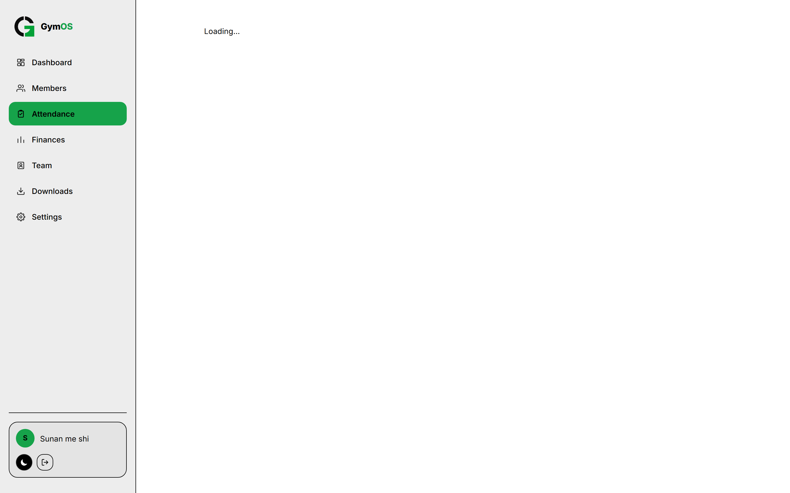
Attendance. Pick a date range with the filter button, or search for one person. Click the little arrow on a row to see which receptionist recorded it.
Date ranges
Range
Covers
Today
Midnight until now. The normal view.
This week
Monday until now.
This month
The 1st until now.
Custom
Shows From and To date pickers. Fill in both. The To date is included in full.
Things worth checking here
Question
How
Which hours are busiest?
Set Today or This week and read down the times.
Is this member still coming?
Set This month and search their name.
Did the desk record anything on that day?
Custom, with the same date in both boxes.
Is a particular shift checking people in at all?
Open a few rows during those hours and look at the names.
A member appears at most once a day — the desk can only check somebody in once per day.
If it's empty and it shouldn't be
Either the desk isn't checking people in, or a desk computer hasn't sent its work up yet. Chapter 15 covers the second one.
Chapter 9
Finances
Everything about money on one page. Pick a period, read the total, then look at the payments behind it.
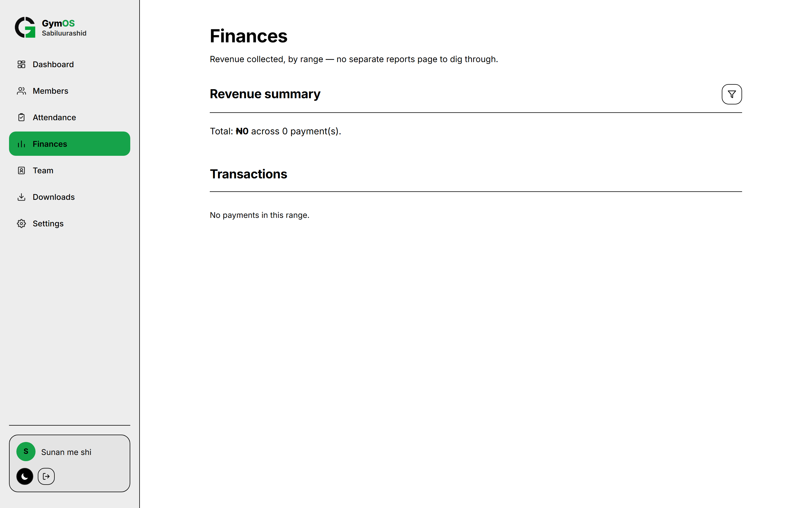
Finances. The total and the number of payments are at the top; every payment is listed underneath. Open a row to see which receptionist took it.
Periods
Period
Covers
Daily
Midnight until now.
Weekly
Monday until now.
Monthly
The 1st until now.
All time
Everything this gym has ever taken.
Custom
Any two dates — use this for a finished month or a promotion week.
The summary reads something like Total: ₦450,000 across 63 payment(s). The count matters as much as the total — 63 small payments tell a different story from 6 big ones.
These figures never change
Each payment remembers the amount charged at the time. If you raise a price tomorrow, not one figure in this history moves. Last month's total will read the same in a year.
Checking a shift
Set the period to Daily.
Note the total and the number of payments.
Open rows to see which receptionist took each one — that's the figure to compare against their cash.
Your receptionists see the same shift on their own Finances page, showing only their own takings. You're both looking at the same numbers.
If a payment seems missing
On a desk computer, a payment that hasn't been sent up yet is safe on that machine but invisible to you. Before assuming it wasn't taken, ask the desk to check the number on their send button. See Chapter 15.
Chapter 10
Expiring soon
The list of people to ring this week. The most valuable page in GymOS, and the easiest to forget.
There's no menu item for it. You get there by clicking the Expiring in 7 days box on your Dashboard.
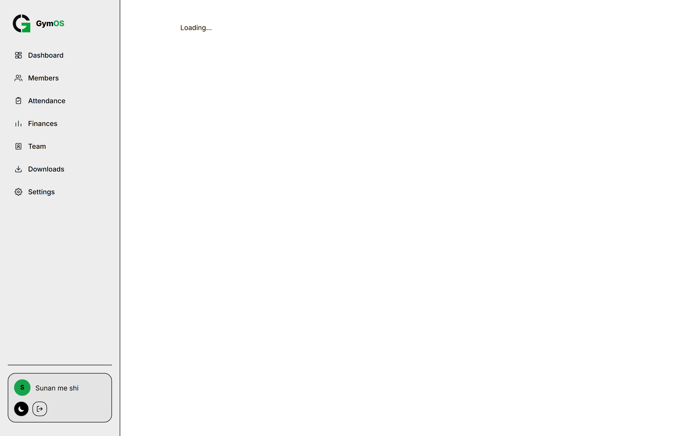
Expiring soon. Everything running out in the next 7 days — memberships and equipment together, soonest first. Each name is a link to that member's page.
People who have already lapsed aren't here
This is a list of people you can still catch before they run out. For those who already have, use Members → Expired Membership.
Two lists, two jobs
Where
Window
Use it for
This page
7 days
This week's phone calls. Urgent.
Members → Expiring Soon
30 days
Planning the month ahead. Not urgent.
How to work it
Open it every Monday.
Click each name to see their phone number and what they've paid before.
Ring or message them. Say the actual date they run out — it works better than "soon".
Tell your desk who's coming in to renew, so it's expected.
Check on Friday that the list has got shorter.
"Nothing expiring in the next week" is good news — though if it stays that way while your member count grows, check that memberships are actually being recorded at sign-up.
Chapter 11
Your team
Making accounts for your receptionists, seeing what each one has done, and switching an account off when somebody leaves.
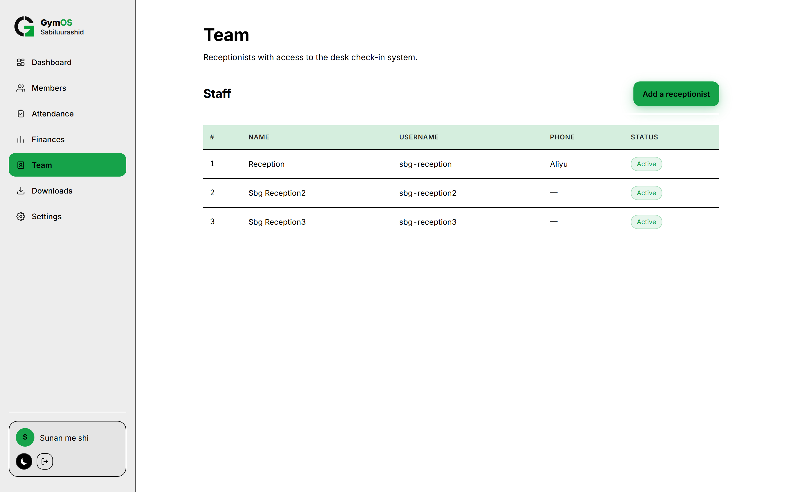
Team. Every receptionist, their username, and whether their account is switched on. The green button adds a new one. Click a row to open that person.
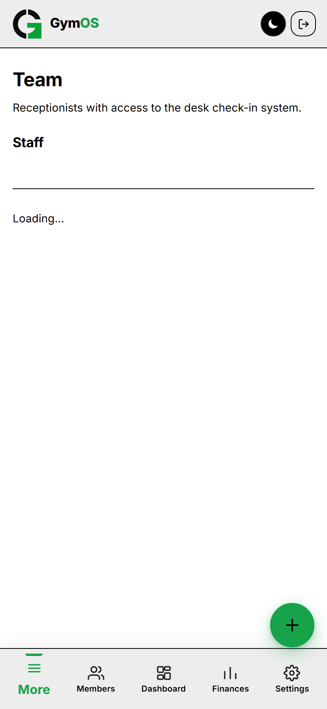
Team on a phone. Each person becomes a card instead of a table row, and the green round + in the corner is how you add someone. Every page that creates something works this way on a phone.
Adding a receptionist
Press Add a receptionist.
Name — their real name. This is what shows against every payment and check-in they record, so use the name you'd actually use when asking them about one.
Username — your gym's code and dash are already there; you type only the bit after it. Letters and numbers only. A first name is usual, giving something like sbg-sarah.
Phone — needed.
Address and Email — optional.
Press Create account.
The starter password is shown once
GymOS shows you a password to pass on to them. It is displayed this one time only and cannot be looked up again. Write it down or send it before you press Done. If you lose it, just create the account again under a slightly different username.
Give them the username and that password. The first time they sign in, GymOS makes them pick their own. You won't know their password — and that's the point: it's what makes "collected by [name]" mean something.
If you see "That username is already taken.", add an initial — sbg-sarahb.
One person's page
Click any row on the Team list. You'll see their details, and underneath, everything they've done — newest first:
What it says
What they did
Registered member
Signed up a new member — the name and number are shown.
Collected membership payment
Took a membership payment.
Collected equipment payment
Took an equipment payment.
Recorded attendance
Checked a member in.
This is how you check a shift was really worked, review somebody's first week, or trace a particular record back to a person.
Edit contact info lets you fix their phone and email. Their name and username can't be changed after the account is made.
If somebody forgets their password
You can put a receptionist back on the starter password yourself. There is no "forgot password" email in GymOS, so this is how a forgotten password gets fixed.
Open Team and click the person.
Press Reset password and confirm.
GymOS shows you the starter password, Welcome123. Give it to them.
They sign in with it, and GymOS immediately asks them to choose a new password of their own.
You still won't know their password
You only ever see the starter one. The moment they sign in they pick their own, and you can't see it — which is what keeps "collected by [name]" meaningful.
Resetting is not the same as locking someone out
A reset is for somebody who has forgotten their password and still works for you. If you want somebody out, use Suspend below — that's what actually stops them signing in.
Your provider can do the same for your own owner password — contact them.
Suspending an account
The Suspend button switches an account off.
What suspending actually does
They cannot sign in at all until you switch them back on. If they try, GymOS tells them the account has been suspended and to speak to you. It works everywhere — on the web, on a phone, and on the desk computer, including when that computer has no internet. There is no way round it.
If they are signed in at that moment, they are stopped there and then. They don't get to finish the shift.
Nothing they recorded is removed. Every payment, check-in and sign-up stays exactly where it is, still showing their name.
Their row stays on your Team list marked Suspended, so your staff list stays honest.
Unsuspend switches them straight back on, with the same username and the same password they chose.
When somebody leaves
Suspend them the same day. It takes two clicks, loses nothing, and can be undone at any time. There is no reason to leave a departed employee able to sign in.
A desk computer that is offline
A suspension reaches an offline desk computer the next time that computer gets internet. If you need somebody locked out of a machine that is off the internet right now, switch the machine off or take it off the desk until it can connect.
Chapter 12
Settings
Where you actually set your gym up: what you sell, at what price, and what your desk asks new members. Do this before anybody signs anybody up.
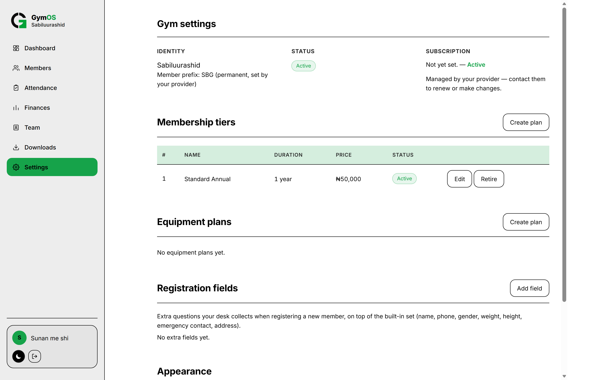
Settings. Your gym's details at the top (you can't change these), then your membership tiers, your equipment plans, and your extra sign-up questions.
Your gym's details
Item
Detail
Identity
Your gym's name and its member code, marked permanent, set by your provider.
Status
Whether your gym is switched on.
Subscription
When it runs out. Your provider looks after this — contact them to renew.
The member code can't change because it's printed into every member number you've issued. Changing it would make old cards disagree with the system.
Membership tiers
These are what your desk picks from when signing somebody up. You need at least one, or nobody can be signed up at all.
Press Create plan in the Membership tiers box.
Name — what your desk and your members will see. Standard, Student, Premium.
Price — a number, in your gym's currency.
Press Create plan.
Memberships always last a year
There's no length to choose — the box says so. Membership is the yearly right to belong. Shorter selling is what equipment plans are for.
Equipment plans
Made the same way, with one extra choice: how long it lasts.
Length
Runs until
Usually for
Day
The end of the day it starts.
Walk-ins and casual users.
Week
Seven days later.
Visitors, short programmes.
Month
The same date next month.
The usual choice for most gyms.
Year
The same date next year.
Committed members, usually cheaper overall.
When equipment starts counting
Not when it's paid for — at the member's next check-in. Until then your desk sees Pending. So a day pass bought on Monday evening for a Tuesday visit gives them Tuesday, not a wasted Monday. This matters most for daily plans, and it's the thing new receptionists most often get wrong.
Changing a plan
Edit lets you change the name, the price and (for equipment) the length.
Retire takes a plan out of your desk's list without deleting it. It can't be sold any more, and every past payment on it stays exactly as it was.
Reactivate brings a retired plan back.
How to raise a price
Just edit the price. Existing members keep what they paid for until it runs out, because every payment remembers its own amount. The new price applies to the next sale. Use Retire instead when you're stopping an offer altogether.
Extra sign-up questions
These are questions your desk asks on top of the built-in ones (name, phone, gender, weight, height, emergency contact, address).
Press Add field.
Field name — the question, worded the way your desk should read it out.
Type — a typed answer, a number, or a Yes/No choice.
Tick Required to complete registration if your desk must not skip it.
Press Add field.
Good ones: How did you hear about us?, Referred by, Any medical conditions? (Yes/No, required), Occupation. Remember you can search these answers from the Members page.
Retire, don't delete
Delete is permanent and it warns you. Almost always use Retire instead — that stops the question being asked from now on while keeping the answers you've already collected on each member's page.
Colours and your password
At the bottom: Light, Dark or System (saved on your device only), and a Change password button. Changing your password asks for your current one first.
Chapter 13
Downloads
Covered fully in Chapter 4. This is the short version.
Item
Notes
GymOS desktop app
The program for a desk computer. Owner accounts only — receptionists never see it. Only shown in a web browser, and hidden inside the installed app. Large, around 120 MB.
Owner's guide
This booklet. It covers the front desk too, so you can train staff from it.
Your receptionists have their own Downloads page too, but it holds only the front-desk guide. On their phones it sits inside Settings rather than taking a button of its own.
Each item shows its version and date, so you can tell whether your desk computers are running the current version before you go chasing a problem that reinstalling would fix.
If you see
What it means
Not available yet — check back shortly.
Your provider hasn't published that file.
Downloads need an internet connection.
You're in the desk app with no internet. This page always needs it.
Chapter 14
Your subscription
Your gym pays your provider for GymOS. Here's what happens at each stage.
If you started on a free trial
Many gyms start with a free trial — one, two, three or six months of the full software, free, so you can try it properly before paying. Your provider sets this when they create your gym.
Nothing is limited or watered down. It is the complete product.
Your Settings page shows Free trial and the date it runs to.
When it ends, the gym locks exactly like a lapsed subscription — and nothing you recorded is lost. Every member, payment and visit comes straight back the moment a paid plan is added.
Before your trial ends
Note the date now and talk to your provider a week before. That way the desk never meets a locked screen on a busy morning.
The four stages
Stage
What it means
What your gym sees
Active
Paid up.
Everything normal.
Grace
Just past the date, inside the short grace period.
Everything still works. Renew now.
Expired
Past the grace period.
The desk app locks itself.
Locked
Switched off by your provider.
Locked everywhere at once.
You can check this any time in Settings, under Subscription.
What being locked looks like
The whole app is replaced — for you and your desk — with one message:
Subscription expired
"This gym's access is currently locked. Contact your provider to reactivate — nothing has been lost, and everything returns the moment it's unlocked."
Nobody can work — not you, not any receptionist.
The desk can't sign anybody up, check anybody in, or take money.
Nothing is deleted. Every member, payment and visit is still there and comes straight back when it's switched on again.
There is nothing to fix on your side. Contact your provider.
The desk app locks itself too
Being offline is not a way round this. The desk app keeps track of time on the machine and locks itself once the grace period passes, whether or not it has internet — and changing the computer's clock doesn't help.
Don't get caught out
Check the date in Settings at the start of each month and put it in your calendar with a week's warning. A locked gym on a Saturday morning is an expensive reminder.
Chapter 15
When the internet is down
How your desk keeps working through an outage — and why a payment might be on the desk computer before it reaches your screen.
How it works
The desk app keeps its own copy of your gym's information on the computer. Every sign-up, payment and check-in is saved there first and marked as waiting. Sending it up is a separate step.
The part that matters to you
Nothing is ever lost to an outage. But until it has been sent, you cannot see it — not on your Dashboard, not in Finances, not in Attendance. A quiet-looking day might just be an unsent one.
When it gets sent
Automatically, once, every time somebody signs in with the internet working.
By hand, when somebody presses the send button in the menu. It asks for their password first, which is how GymOS knows it's really them.
What to tell your staff
Press send once when you arrive.
Press it again as soon as the internet comes back.
Press it before you hand over, and check the waiting number reaches zero.
If it says some records didn't go through, say so — don't just try again quietly.
Signing in without internet
Only works for somebody who has signed in with internet, on that computer, before.
Lasts 14 days from their last proper sign-in there, and restarts each time.
A suspended account still can't get in, with or without internet.
If you think something's missing
Check the waiting number on the desk computer first.
If it's above zero, have them send with good internet, then look again.
If a message named a reason in brackets, pass those exact words to your provider.
If it won't clear after several tries with working internet, that's for your provider, not your desk.
Chapter 16 · Part Two
The front desk
Everything your receptionists see and do, so you can set it up properly and train them without guessing.
16.1 What they can and can't do
They can
Find members and check them in
Sign up new members
Take payments and renewals
Fix member details and photos
See their own takings
Change their own password
They can't
Change plans or prices
Add or remove staff
Undo a payment or a check-in
See the gym's total takings
See another receptionist's takings
Change anything about the gym
16.2 Their screen
What your desk sees. A short menu and one green button. They land on Check-in when they sign in.
Menu item
What it's for
Check-in
Find one person fast. Where they spend most of the day.
Members
The full list, for browsing.
Finances
Only the money they personally took. Today or all time.
Settings
Their details, colours, password — and their copy of the front-desk guide.
On a phone their bar holds those same four, and the green Register a new member button becomes a round + above it — shown only on Check-in and Members, where adding somebody is the obvious next step. There's no More button on a desk account because nothing is left over.
16.3 Checking somebody in
Two search boxes: Name or phone (any part of either), and Member number (your gym's code is fixed in front, they type only the digits). Results appear as they type.
Searching. Tapping a row opens that member's page.
16.4 The member's page, desk version
The desk version has what yours doesn't: Renew / Activate buttons, the coloured entry box, and the green Record attendance button.
On the page
What it does
Add photo / Change
Adds or replaces the member's picture. Never required.
Membership & Equipment
Each has Renew, Renew early or Activate, which opens the plan list and a Collect payment button.
The coloured box
Green Entry allowed only when both are green; otherwise red Entry blocked.
Record attendance
The main button. Goes grey once used today, and while membership has run out.
Edit details
Fixes their personal details. Never touches payments or visits.
Teach this one explicitly
Checking somebody in only needs membership to be good, not the coloured box as a whole. Somebody green on membership and red on equipment can and should still be checked in — and a member who has just bought equipment access must be, because that check-in is what starts it.
16.5 Signing somebody up
The sign-up form. Details on the left, the plan on the right. Your extra questions appear here too.
They must fill in: full name, phone, gender, weight, height, emergency contact name and phone, address, and a membership plan. Optional: date of birth, email, photo, and equipment. Any question you marked required is enforced by name.
Typing a phone number checks for duplicates live. If it finds any, the desk has to tick Create a new member anyway to carry on — which is exactly the pause you want.
16.6 The waiting rule
Equipment shows Pending between paying and the next check-in. Teach this or you'll be charging people twice.
Renew early starts the new period today — the desk should say so before taking money.
Nothing can be undone. Mistakes come to you.
16.7 Their money page
Their takings only. Your Finances page shows the same payments, everybody's together, with the name on each row — so end-of-shift checks compare two views of identical numbers.
16.8 What to cover when training somebody
Signing in, picking their own password, and where sign-out is
That it signs itself out after 30 minutes untouched
The two items, and that both must be green for Entry allowed
That checking in only needs membership
That equipment starts at the next check-in — the Pending rule
One check-in per member per day
That payments and check-ins can't be undone
The duplicate-phone warning, and to look before overriding it
Checking cash against Finances → Today at the end of a shift
Desk computer: pressing send, and clearing the waiting number before handover
What Subscription expired means, and to tell you at once
Chapter 17
Setting up from scratch
The order matters. Do it this way and your desk can open without anybody being stuck.
Sign in on the web with the details from your provider, and pick your own password.
Check whether you're on a free trial and note the date it ends — Settings shows it.
Check your Settings. Confirm your gym's name, note the member code, and check the subscription date.
Create your membership tiers. At least one, or nobody can be signed up. They last a year.
Create your equipment plans — whichever lengths you actually intend to sell.
Add any extra sign-up questions. Much easier now than after two hundred members have been signed up without them.
Create your receptionist accounts. Write each starter password down before pressing Done.
Download the desk app and install it on the desk computer (Chapter 4).
Have every receptionist sign in on that computer once, with internet. This is what lets them work during an outage later.
Do one test sign-up yourself from start to finish — sign somebody up, take an equipment payment, check them in, and watch Pending turn green. Then check it shows in your Finances and Attendance.
Train your desk from Part Two, or hand them the front-desk guide from their own Downloads page.
Choosing your plans
Decision
Suggestion
How many tiers?
Two or three. Every extra one is another decision at the desk while somebody waits.
Name them plainly
Standard, Student, Couples. Your desk reads these out loud.
Equipment lengths
A daily and a monthly cover most gyms. Add weekly only if you'll really sell it.
Extra questions
Three or four at most. Each one is a question asked of somebody standing at your desk.
Chapter 18
If something looks wrong
Every message you're likely to meet.
Screens that replace the app
Screen
What it means
Subscription expired
Your gym is locked. Nothing lost. Contact your provider.
Account suspended
That account has been switched off. For a receptionist, you can switch it back on from Team. For your own account, contact your provider.
No account is set up for…
The password worked but no account is attached. Contact your provider.
Back at the sign-in screen
The 30-minute rule. Sign in again.
Messages on a page
Message
What it means
Couldn't load the dashboard.
A connection problem, not an empty gym.
Couldn't load members / attendance / payments.
That page's information didn't arrive. Check the internet.
Couldn't create the account.
The receptionist wasn't created. Try again.
That username is already taken.
Pick a different one.
Couldn't create the plan / save changes.
Nothing saved. Try again.
Current password is incorrect.
On the password form, the top box is wrong.
Situations
Situation
What to do
A payment is missing from Finances
Check the waiting number on the desk computer first, then the member's own Payments tab, then ask which receptionist took it.
Today's attendance is zero at midday
Either the desk isn't checking people in, or the desk computer hasn't sent its work up.
A member says they paid but shows expired
Open their page → Payments tab. Check the date against the plan length, and make sure it's the right person.
A receptionist can't sign in without internet
They've never signed in properly on that computer, or it's been over 14 days.
Two records for one person
The duplicate warning was overridden. Nothing can be merged or deleted — decide which one is live and tell the desk to use only that.
Old payments look wrong after a price change
They aren't. Every payment keeps the amount charged at the time.
Equipment has said Pending for days
Correct. That member hasn't been checked in since paying.
When to contact your provider
The Subscription expired screen, or a status of Locked or Expired
Your gym's name, member code or currency needs changing
You need another branch, or another owner account
You've lost your owner password
A sending problem keeps coming back with a reason in brackets
Anything that survives a good connection and a fresh sign-in
Chapter 19
Your routine
Ten minutes a day, twenty a week. That's all GymOS asks of you.
Every day — two minutes
Open the Dashboard
Compare today's attendance and today's money against a normal day
Glance at Expiring in 7 days — if it's climbing, open it
Every week — twenty minutes
Open Expiring soon and ring every name on it
Finances → Weekly: compare with last week, and read down the plan names
Attendance → This week: see which hours are busy and which are dead
Members → Expired Membership: pick a few to win back
Check the desk's waiting number has been reaching zero
Every month — half an hour
Finances → Custom across the finished month; write the total down
Compare Active members on the Dashboard with Members → Active Membership — the gap is how many have lapsed
Check your subscription date in Settings and diarise a week's warning
Review your plans and prices; retire what isn't selling
Open each staff page in Team and skim what they've been doing
Suspend anybody who has left
Check Downloads for a newer version of the desk app
The five numbers that matter most
Number
Where
Why
Expiring in 7 days
Dashboard
The only number you can still do something about.
Active Membership count
Members, filtered
Your real paying base, not just your list size.
Weekly revenue
Finances → Weekly
Long enough to be steady, short enough to still fix.
Anything above zero means your figures are incomplete.
GymOS — Owner's Guide. Part Two doubles as training material for new desk staff; they also have their own shorter guide on their Downloads page. Anything about your subscription, your gym's name, member code or branches goes to your provider.
gymos.africa